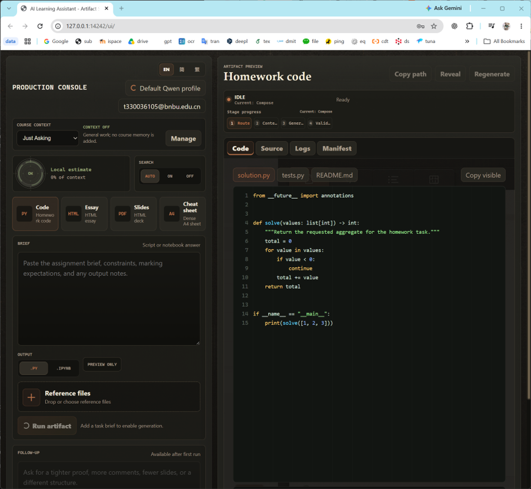
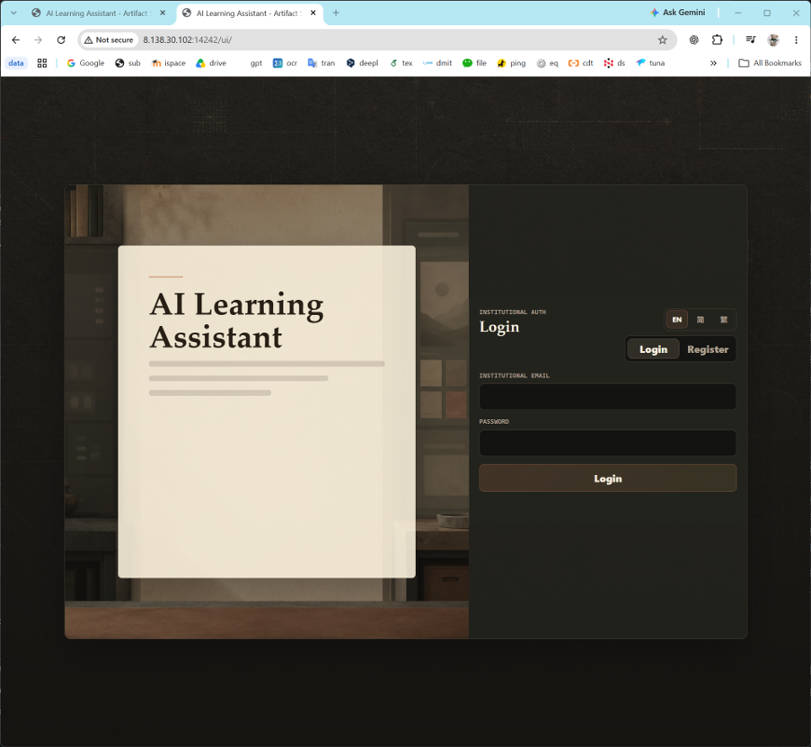
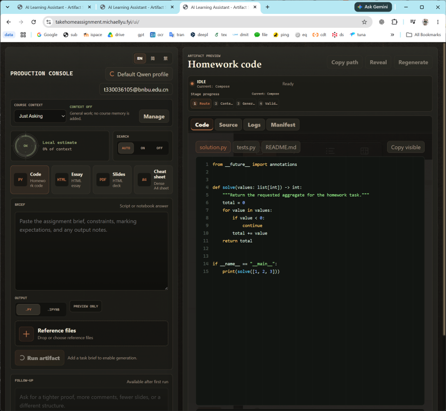

The objective of this assignment is to transform a locally developed AI agent into a publicly accessible cloud service. The report addresses four core goals: (1) containerize and run the application locally using Docker Compose; (2) publish the image to a managed registry and deploy it on a cloud virtual machine; (3) secure the service with a custom domain, HTTPS termination, and reverse-proxy access control; and (4) verify functionality, resolve deployment blockers, and evaluate security, cost, and scalability trade-offs. Each section maps directly to the marking criteria by presenting reproducible commands, exact system states, and evidence-based analysis.
The deployed system follows a two-phase flow. The first phase handles image construction and registry publication. The second phase manages runtime traffic from external clients through a reverse proxy into the application container. The architecture is illustrated below.
The application was first containerized using a Dockerfile that installs Python dependencies, bundles the FastAPI application logic, and includes Playwright with Chromium for client-side PDF rendering. The build command compiles the image locally, after which Docker Compose orchestrates the service lifecycle.
docker compose -p ai-learning-assistant up --build -d
Upon startup, the container exposes port 14242. The health endpoint confirms successful initialization:
curl http://127.0.0.1:14242/health
# Returns: {"status":"ok"}
The web interface becomes available at http://127.0.0.1:14242/ui/. The application generates code homework, essays, slides, and cheat sheets as self-contained HTML files and converts them to PDF using Playwright/Chromium running inside the same container. This design isolates heavy rendering workloads from the host system and ensures deterministic output.
| Command / Endpoint | Expected Behavior | Observed Result |
|---|---|---|
docker compose -p ai-learning-assistant up --build -d | Build image and start service detached | Container started successfully on port 14242 |
GET http://127.0.0.1:14242/health | Return JSON health status | {"status":"ok"} |
Open http://127.0.0.1:14242/ui/ | Render web interface | UI loads; generation and PDF conversion functional |
To move the service beyond the local machine, the container image was built targeting the linux/amd64 platform to match the cloud infrastructure. The image was then pushed to Alibaba Cloud Container Registry (ACR) and pulled onto an Elastic Compute Service (ECS) instance. The container runs on port 14242, exposing the application to the host network.
The observed container state on the ECS instance matches the expected configuration:
crpi-otou15rf69k33qkj.cn-guangzhou.personal.cr.aliyuncs.com/michaellui/takehome:latest0.0.0.0:14242->14242/tcpUp (healthy)Direct access to the cloud instance confirms service availability. The automated check reports:
http://8.138.30.102:14242/ui/This chain validates that the image carries all runtime dependencies, including Playwright binaries, and that the cloud networking stack correctly routes traffic to the containerized application.
A custom domain was configured to provide a stable, human-readable entry point. The DNS A record maps takehomeassignment.michaellyu.fyi to the ECS public IP 8.138.30.102.
Traffic enters the server through an Nginx reverse proxy that forwards requests to http://127.0.0.1:14242. Because the AI agent can produce lengthy outputs, the proxy configuration includes:
proxy_read_timeout 360s to prevent premature connection drops during long generation cycles.proxy_buffering off to stream responses incrementally, reducing memory pressure and improving perceived latency for large payloads.Transport security is enforced via a TLS certificate issued by Let's Encrypt using Certbot with the Nginx plugin. The certificate details are:
takehomeassignment.michaellyu.fyiInitially, an HTTP Basic Authentication layer was configured at the reverse proxy to restrict access. This credential check operates independently of the application's internal BNBU login mechanism. After initial validation, the site was opened to unrestricted public access. The explicit security trade-off of this decision is that convenience and reduced friction for users replace the additional authentication barrier, increasing exposure to automated scraping, unintended usage, and credential-guessing attacks against the underlying application layer.
Service availability was validated at each deployment stage using automated scripts and visual confirmation. Screenshots are captured at the following endpoints:



https-domain-check.txt (the Basic Auth layer was later removed, so no screenshot is attached)Automated verification scripts recorded the following outcomes:
| Script File | Test Scenario | Result |
|---|---|---|
local-ui-check.txt | Local container UI accessibility | HTTP 200 PASS |
ecs-docker-check.txt | ECS-hosted container UI accessibility | HTTP 200 PASS |
https-domain-check.txt | Domain HTTPS behavior with and without credentials | 301 redirect / 401 without credentials / 200 with credentials |
Three distinct operational blockers occurred during the deployment pipeline. Each was diagnosed and resolved using targeted configuration changes.
buildx manifest with the error unknown manifest class for application/vnd.oci.empty.v1+json. The registry expects a standard OCI image manifest rather than an empty placeholder generated by modern provenance tracking. The issue was resolved by building with --provenance=false --sbom=false, which forces Docker to emit a plain single manifest compatible with the registry's ingestion pipeline.requests.exceptions.ReadTimeout when contacting acme-v02.api.letsencrypt.org. Investigation revealed that the ECS instance lacks a working IPv6 route, yet DNS returns both A and AAAA records. The Python HTTP client attempted IPv6 first, timed out, and delayed fallback. IPv4 connectivity was confirmed healthy (HTTP 200 in 1.1 s). The fix involved adding precedence ::ffff:0:0/96 100 to /etc/gai.conf, which prioritizes IPv4-mapped IPv6 addresses and effectively forces IPv4-first resolution for outbound connections.403 Forbidden with headers Server: Beaver and Non-compliance ICP Filing. HTTPS on port 443 functions normally. This has two direct implications: (1) the standard HTTP-to-HTTPS redirect cannot rely on a listening port 80 service, requiring alternative routing or client-side enforcement; and (2) Let's Encrypt HTTP-01 certificate renewals fail because the ACME challenge requires a reachable HTTP endpoint. Renewal must therefore switch to DNS-01 validation or require manual intervention.The application uses classroom-grade BNBU authentication, which cannot be trusted on the public internet. Relying solely on this mechanism exposes the service to credential stuffing, session hijacking, and unauthorized API consumption. The following controls mitigate risk in the current deployment: